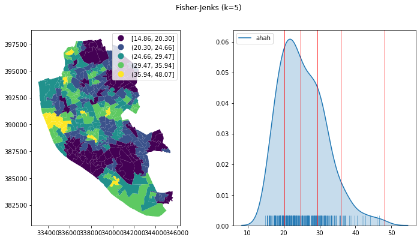

Solutions for block D#
import contextily
import geopandas, pandas
import seaborn as sns
import matplotlib.pyplot as plt
from pysal.viz import mapclassify as mc
Data#
Geometries
p = ("Access_to_Healthy_Assets_and_Hazards_AHAH_E08000012/data/"\
"Access_to_Healthy_Assets_and_Hazards_AHAH/"\
"Local_Authority_Districts/E08000012/shapefiles/"\
"E08000012.shp"
)
lsoas = geopandas.read_file(p)
Tabular data
p = ("Access_to_Healthy_Assets_and_Hazards_AHAH_E08000012/data/"\
"Access_to_Healthy_Assets_and_Hazards_AHAH/"\
"Local_Authority_Districts/E08000012/tables/"\
"E08000012.csv"
)
ahah_data = pandas.read_csv(p)
Merge
ahah = lsoas.join(ahah_data.set_index("lsoa11cd"), on="lsoa11cd")
Task I#
5-class equal interval
# Set up figure and axes
f, axs = plt.subplots(1, 2, figsize=(12, 6))
# Plot map to first axis
ahah.plot(column="ahah",
scheme="equal_interval",
k=5,
legend=True,
ax=axs[0]
)
# KDE
classi = mc.EqualInterval(ahah["ahah"], k=5)
# Plot the kernel density estimation (KDE)
sns.kdeplot(ahah["ahah"], ax=axs[1], shade=True)
# Add a blue tick for every value at the bottom of the plot (rugs)
sns.rugplot(ahah["ahah"], ax=axs[1], alpha=0.5)
# Loop over each break point and plot a vertical red line
for cut in classi.bins:
axs[1].axvline(cut, color='red', linewidth=0.75)
# Title
f.suptitle("Equal Interval (k=5)")
# Display image
plt.show()
5-class quantiles
# Set up figure and axes
f, axs = plt.subplots(1, 2, figsize=(12, 6))
# Plot map to first axis
ahah.plot(column="ahah",
scheme="Quantiles",
k=5,
legend=True,
ax=axs[0]
)
# KDE
classi = mc.Quantiles(ahah["ahah"], k=5)
# Plot the kernel density estimation (KDE)
sns.kdeplot(ahah["ahah"], ax=axs[1], shade=True)
# Add a blue tick for every value at the bottom of the plot (rugs)
sns.rugplot(ahah["ahah"], ax=axs[1], alpha=0.5)
# Loop over each break point and plot a vertical red line
for cut in classi.bins:
axs[1].axvline(cut, color='red', linewidth=0.75)
# Title
f.suptitle("Quantiles (k=5)")
# Display image
plt.show()
5-class Fisher-Jenks
# Set up figure and axes
f, axs = plt.subplots(1, 2, figsize=(12, 6))
# Plot map to first axis
ahah.plot(column="ahah",
scheme="fisher_jenks",
k=5,
legend=True,
ax=axs[0]
)
# KDE
classi = mc.FisherJenks(ahah["ahah"], k=5)
# Plot the kernel density estimation (KDE)
sns.kdeplot(ahah["ahah"], ax=axs[1], shade=True)
# Add a blue tick for every value at the bottom of the plot (rugs)
sns.rugplot(ahah["ahah"], ax=axs[1], alpha=0.5)
# Loop over each break point and plot a vertical red line
for cut in classi.bins:
axs[1].axvline(cut, color='red', linewidth=0.75)
# Title
f.suptitle("Fisher-Jenks (k=5)")
# Display image
plt.show()

Above/below unique value
# Make a new column with every value set to "above"
ahah["above_below"] = "Above"
# Retrieve values below the average and switch to "below"
ahah.loc[ahah["ahah"] < ahah["ahah"].mean(),
"above_below"
] = "Below"
# Plot map
ahah.plot(column="above_below",
categorical=True,
cmap="Pastel2",
legend=True,
figsize=(9, 9)
);
Task II#
Zoom of the city centre of Liverpool with he same color for every LSOA
ax = ahah.plot(alpha=0.5,
facecolor="k",
edgecolor="w",
figsize=(9, 9)
)
contextily.add_basemap(ax, crs=ahah.crs)
ax.set_xlim((334000, 337000))
ax.set_ylim((387500, 392500))
plt.show()
Quantile map of AHAH for all of Liverpool, zoomed into north of the city centre
ax = ahah.plot(column="ahah",
scheme="quantiles",
figsize=(9, 9)
)
contextily.add_basemap(ax, crs=ahah.crs)
ax.set_xlim((333000, 338000))
ax.set_ylim((391000, 395000))
plt.show()
Zoom to north of the city centre with a quantile map of AHAH for the section only
ax = ahah.cx[333000:338000,
391000:395000]\
.plot(column="ahah",
scheme="quantiles",
figsize=(9, 9)
)
contextily.add_basemap(ax, crs=ahah.crs)
plt.show()